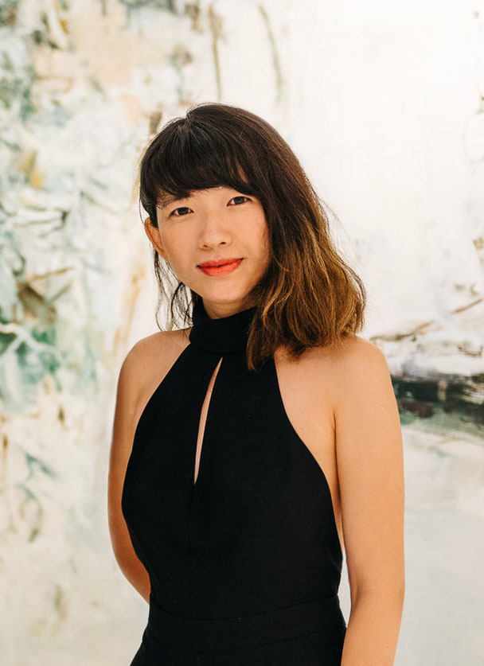

what is almost art project?
AAP是中国首个也是唯一一个专为素人艺术家（自学，未受过专业艺术教育）举办的艺术项目。我们创办的素人艺术节自2015年至今已经成功举办了三届，发现并推出了百余位来自各个领域的素人艺术家，
向公众展示千余件杰出的素人艺术作品。
我们拥有中国最大的素人艺术媒体平台，中国唯一持续记录素人艺术的文献类杂志《ART SU》。作为中国素人艺术的窗口，我们不仅积极推动各类素人艺术相关活动与合作，更在2018年前往纽约、日本参展，
在日益重要的世界素人艺术版图中填补了中国的空白。
Almost Art Project (AAP) is the first art festival in China that specializes in showcasing the works of outsider artists (self-taught artists
with no professional training). Since the inaugural exhibition in 2015, the annual event in Beijing has been held successfully in the past three years.
Over a hundred outsider artists of all backgrounds and ages have been discovered through the platform, and more than a thousand works of outsider art have
been shown at APP’s public exhibitions.
We have the largest outside art media platform in China and publish the only continuous yearbook on Chinese outside art, Art Su. As a window to
Chinese outside art, not only do we promote it through various public events and collaborations, we have also brought Chinese outside art to the US and
Japan in 2018, representing China in the increasingly important world map of outside art.
mission
＋发现中国的素人艺术及素人艺术家，为素人艺术家创造一个展示平台，并通过销售其作品为他们创造更好的生存及创作环境。
＋通过学术的梳理重构素人艺术在艺术史中的地位，打破日趋僵化的当代艺术系统，建立更加有机而多元的当代艺术生态。
＋在挖掘优秀的非主流艺术作品外，AAP尤其关注中国的亚文化发展，通过对亚文化的挖掘和研究，为整个艺术文化界的发展注入更多可能性。
+ Discover Chinese outsider art and artists, create a better creative environment for outsider artists,
through exhibiting and selling of their works.
+ Give outsider artists their deserved position in art history through research and publication, challenge the increasingly rigid contemporary art system,
and create a more dynamic and diverse contemporary art ecosystem.
+Besides discovering outstanding non-mainstream art works, AAP pays particular attention to various sub-cultures in China. Through discovering and
studying sub-cultures, AAP can lend more possibilities to the development of art and culture.

founder
刘亦嫄 SAMMI LIU毕业于伦敦苏富比艺术学院当代艺术系。北京TABULA RASA画廊的联合创始人和执行总监。曾任THE ART NEWSPAPER CHINA资深编辑，从事媒体工作多年。曾参与“买得起的艺术节”， 上海当代艺术博览会等项目，成功组织策划过多个游击展览。
Graduated from Sotheby's Institute of Art in London, contemporary art department. Co-Founder and executive director of TABULA RASA Gallery in Beijing. Once held the position as the Senior editor of THE ART NEWSPAPER CHINA, works in the media industries for many years. Also took part in projects including Affordable Art China and ShContemporary.